홈 미션 카드 진입부터 CMS 지급 설정까지 — 실제 배포본 화면 캡처 기반
홈 상단 미션 카드 4종(쿠팡 구경 · 행운 룰렛 · 친구 초대 · 연속구매) 중 "쿠팡 구경 · 매일 100P" 카드를 탭하면 출석체크 화면으로 진입한다. 기존 출석체크는 정책상 "쿠팡 구경하기"로 대체됐다(경유 방문 습관화 + 30초 체류 검증으로 어뷰징 방지).
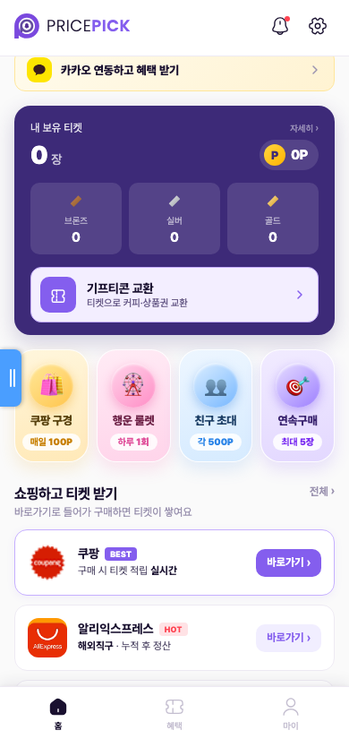
상단에 연속 구경 일수, 가운데에 이번 주 구경 현황(요일별 100P 체크)과 "5일 연속 달성까지" 진행바, 하단에 보상 안내(이벤트 티켓 1장)와 CTA "쿠팡 구경하러 가기"가 배치된다.
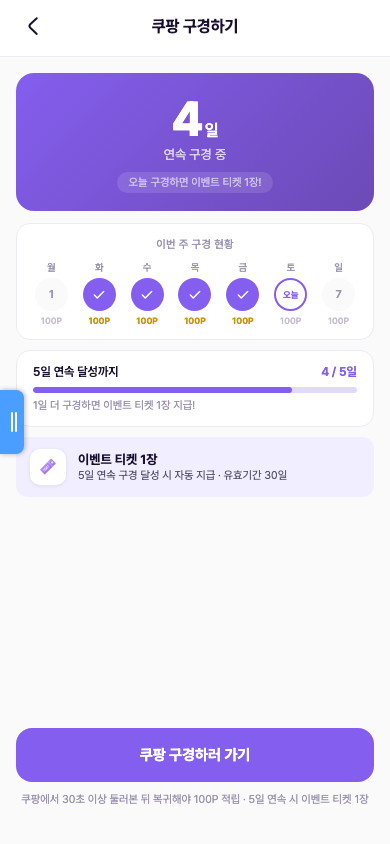
"쿠팡 구경하러 가기"를 눌러야 인정이 시작된다(쿠팡 앱만 열면 미인정). 브릿지에서 쿠팡으로 이동하고, 30초 이상 둘러본 뒤 복귀 버튼을 누르면 체류 여부를 검증한 뒤 적립을 확정한다. 단순히 앱만 켰다 끄면 적립되지 않는다.
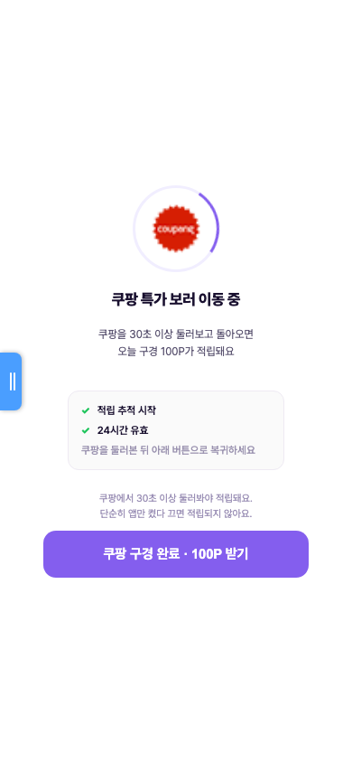
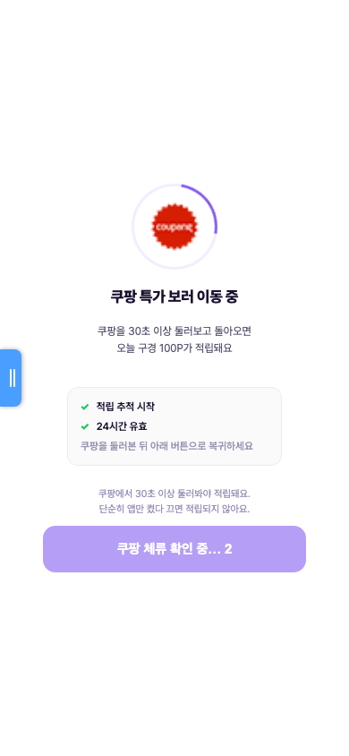
체류 검증을 통과하면 그 자리에서 100P가 지급되고 토스트로 알린다. 5일 연속을 채운 날에는 달성 화면과 함께 이벤트 티켓 1장이 자동 지급되어 티켓함에 추가된다(경품 응모 전용). 구매가 아닌 무상 보상이므로 환불과 무관하며 회수가 없다.
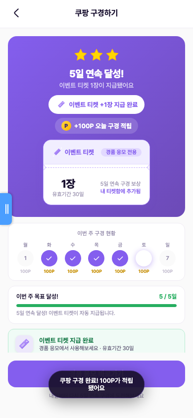
같은 출석 메인 화면이 유저 상태에 따라 3가지로 분기된다. 연속이 끊기면 스트릭이 1일부터 다시 시작된다(누락 요일은 X 표시).
첫 진입 상태. "오늘 첫 체크로 시작해보세요!" 배지와 0/5 진행바.
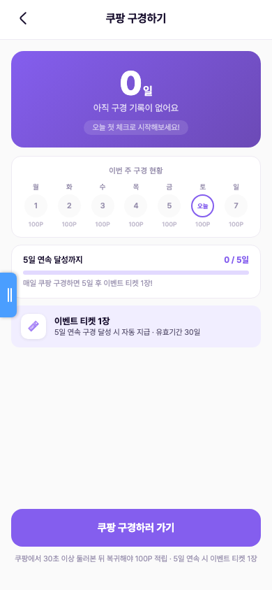
오늘 몫을 이미 받은 상태. CTA가 "오늘 구경 완료"로 비활성화되고 "내일 자정 이후 다시" 안내.
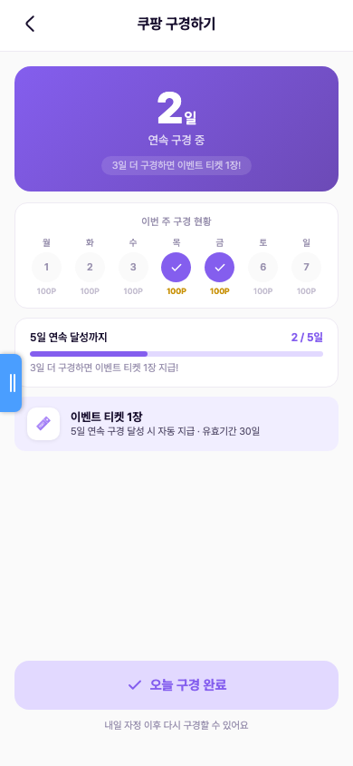
하루 누락 시 안내 카드와 함께 스트릭이 오늘부터 1일로 재시작. 누락 요일은 X로 표시.
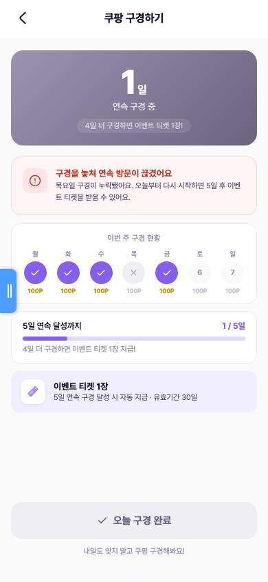
마이 > 활동내역에서 "쿠팡 구경 출석체크 +100P"(포인트)와 5일 달성 이벤트 티켓 적립(+1장)이 날짜와 함께 기록된다. 탈퇴 전까지 모든 이력이 보존된다.
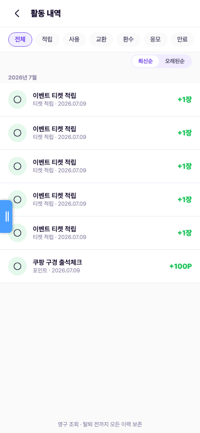
CMS "포인트 내역"은 Firestore 포인트 원장(append-only)을 실집계한다. 출석으로 지급된 100P가 적립 레코드로 실시간 누적되고, 상단에 누적 적립 포인트·전체 원장 레코드 수·사용 차감·만료 소멸 집계 카드가 표시된다. 회수·차감도 삭제 없이 음수 레코드로 추가된다(10P = 1원).
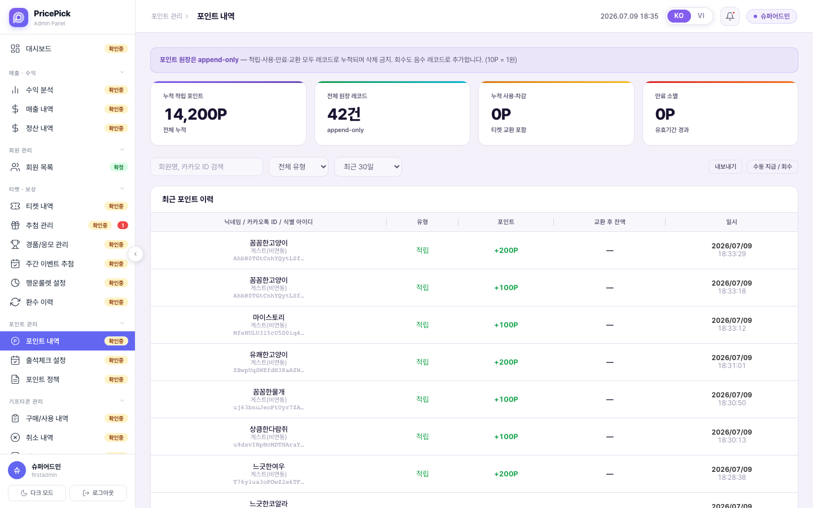
CMS "출석체크 설정" 메뉴에서 일일 지급 포인트(100P), 연결 제휴몰(현재 쿠팡 단독), 5일 연속 보너스(이벤트 티켓 1장), 출석 인정 조건(제휴몰 방문 후 앱 복귀), 초기화 시각(00:00)을 관리한다. 상단에는 오늘 출석 회원·지급 포인트·5일 연속 달성·방문 전환율 집계 카드가 배치된다.
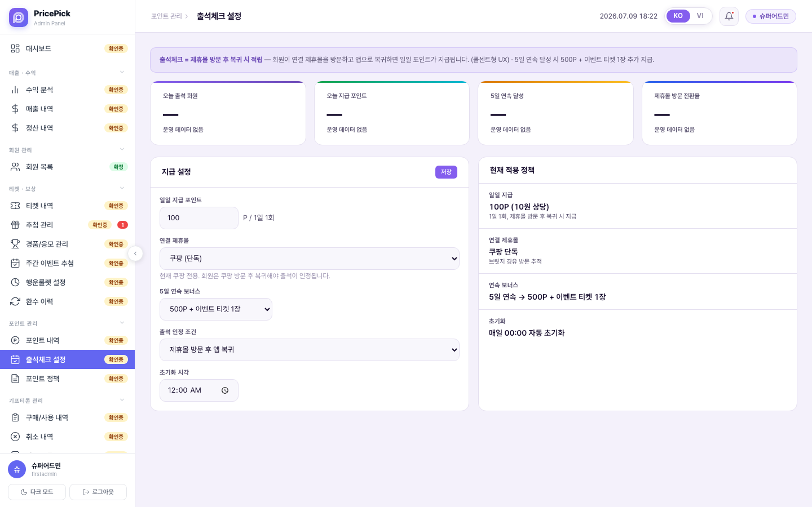
| 항목 | 내용 |
|---|---|
| 기본 지급 | 매일 앱을 거쳐 쿠팡 방문 + 30초 이상 체류 확인 시 100P. 하루 1회. |
| 인정 조건 | "구경하기" 버튼을 먼저 눌러야 인정(그냥 쿠팡 앱만 열면 미인정). 쿠팡을 둘러본 뒤 앱으로 복귀해야 완료. |
| 자정 경계 | 앱으로 복귀한 시점의 날짜 기준. |
| 환불 관계 | 구매와 무관한 무상 보상 — 환불과 무관, 회수 없음. |
| 5일 연속 보너스 | 5일차도 매일 지급되는 100P는 동일, 추가로 이벤트 티켓 1장 지급(500P 보너스 없음). 이벤트 티켓 획득 독립 3종(출석·행운룰렛·온보딩) 중 하나. 누락 시 스트릭 1일부터 재시작. |
| 2배 부스터 | 출석 직후 일정 시간(현재 30분, 운영값) 내 경유 구매가 확정되면 추가 100P(총 200P). 일 1회. 추가분은 구매 확정 후 지급(환불 리스크 최소화). — 현재 데모 미구현. |
| 이력 표시 | 월~일 고정 달력이 아니라 오늘 기준 직전 7일 롤링으로 표시(미션이 연속 5일이라 요일과 무관 · DEVQA 켈빈 #5 확정). — 현재 데모는 고정형. |
| 이벤트 티켓 규칙 | 경품 응모 전용 · 받은 날부터 100일 만료(정책 기준). 일 5장 / 월 30장 공통 한도의 별개 경로(출석 5연속은 이부장 패키지와 독립 유지). |
| 계정 병합 | 카카오 연동 병합 시 이벤트성 무상지급분(출석·룰렛·온보딩)은 파밍 차단을 위해 합산에서 제외. |